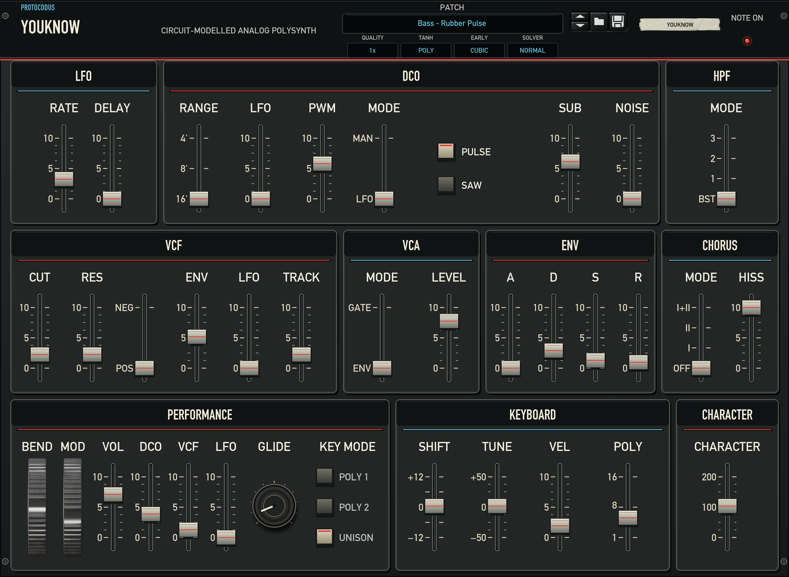

Notes but no sound
Load Init or reset the device, verify Volume and VCA Level, and confirm both stereo outputs are connected. Current builds include the preset-switch held-key recovery fix.
A circuit-modelled analogue polysynth with a direct subtractive signal path, stereo chorus, polyphonic MIDI, Note/Gate CV, and scalable rear-panel engine quality.

New devices use 1x Quality, Poly VCF Tanh, Cubic Fast Early, and the Normal VCF Solver. The four engine controls live on the rear panel and are stored with the song.
Load Init or reset the device, verify Volume and VCA Level, and confirm both stereo outputs are connected. Current builds include the preset-switch held-key recovery fix.
Select 1x, Poly, Cubic, and Normal on the rear, then reduce Voices for dense arrangements. Reserve 4x with many voices for offline or lightly loaded work.
Release all notes and let the output tail settle. Quality changes apply at a safe silent boundary to avoid disruptive transitions.
Connect both Gate CV and Note CV. The rear CV input is monophonic and expects Reason's normal pitch and positive-gate ranges.
Include the YouKnow version, Reason version, operating system, computer model, audio sample rate, patch name, and clear reproduction steps.
Please do not send confidential songs, credentials, or recordings unless they are necessary and safe to share. Support information is used to answer the request and investigate the issue.
Direct support from Protocodus